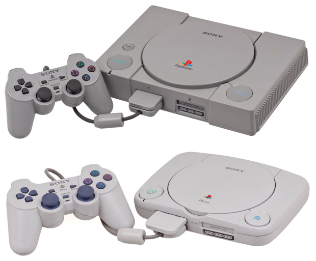
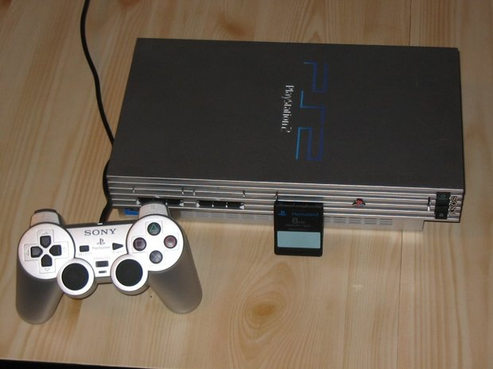
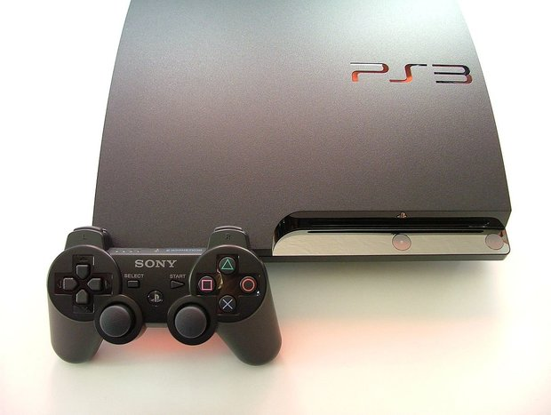
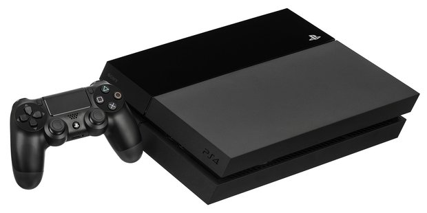

Playstation
Оригинальная, первая Playstation была выпущена компанией Sony 26 лет назад, в декабре 1994 года. Она относится к игровым приставкам пятого поколения — конкурентами были Sega Saturn и появившаяся на два года позже Nintendo 64. Особенностью этого поколения считается переход к трехмерной графике — до этого игры были «плоскими». Еще одна особенность — игры у приставок пятого поколения (за исключением Nintendo 64) стали выпускаться на дисках, а не на картриджах.
Считается, что Playstation смогла выиграть гонку с конкурентами в том числе благодаря относительно низкой стоимости приставки и, что даже более важно, благодаря сотрудничеству со сторонними разработчиками игр — Nintendo и Sega акцентировали внимание на собственном производстве видеоигр. Всего первая Playstation была продана в количестве 102 млн штук — Sega Saturn продали в количестве всего 9,5 млн, а Nintendo 64 — в количестве 33 млн. Производить Playstation перестали только в 2006 году, когда Sony решила выпускать уже даже не Playstation 2, а Playstation 3. Говоря про технические характеристики — у первой приставки от «Сони» был процессор с частотой около 34 МГц, оперативная память в 2 мегабайта, 1 мегабайт видеопамяти и двухскоростной CD-ROM.
Playstation 2
Новая версия игровой приставки была выпущена спустя шесть лет после выхода первой (такая периодичность, 6—7 лет, сохраняется до сих пор). Продажи начались в марте 2000 года, производство завершилось только в январе 2013 года. За это время продали 155 млн приставок — это рекордный показатель среди вообще всех игровых приставок. Основным конкурентом Playstation 2 была выпущенная на год позже Microsoft Xbox, но их продали в количестве всего 24 млн штук.
Основным плюсом Xbox, которого изначально не было в приставке от Sony, стала поддержка онлайн-игр. Тем не менее спустя пару лет поддержка онлайн-игр добавилась и в Playstation 2. Приставка, в отличие от предыдущей модели, поддерживает уже не только CD, но и DVD — появилась и поддержка воспроизведения видео. Еще из важных особенностей — Playstation 2 поддерживала игры и от первой версии, что позволило сохранить пользователей оригинальной PS.
Технические характеристики у PS2 ожидаемо сильно улучшились. Процессор тут теперь работал на частоте в 295 МГц, оперативной памяти было 32 мегабайта, видеопамяти — 4 мегабайта. В отличие от Xbox, в Playstation 2 по-прежнему не было жесткого диска, что в принципе было существенным недостатком — но на продажи приставки, как мы видим, не повлияло.
Playstation 3
Следующая приставка от Sony вышла в ноябре 2006 года. Производство было завершено относительно недавно, в мае 2017 года. Было продано около 90 млн экземпляров консоли. Основными конкурентами были Xbox 360 и Nintendo Wii. При этом первая из них продавалась примерно так же, как PS3, а Nintendo Wii оказалась даже более популярной — ее продали в количестве примерно 102 млн штук. Успех последней основан на особенных контроллерах, которые реагируют на движения игрока
В Playstation 3 уже появился жесткий диск — изначально были версии на 20 и 60 гигабайт, затем добавились версии на 40 и 80 гигабайт. В 2009 году добавилась Slim-версия — более тонкая и маленькая, но с большим жестким диском — на 120 гигабайт. Наконец, в 2012 году вышла PS3 Super Slim — еще меньше и легче, с жестким диском на 250 или 500 гигабайт, или SSD на 12 гигабайт. В приставках появился Blu-ray привод и Bluetooth, а также Wi-Fi. Процессор тут — частотой в 3,2 ГГц. И оперативной, и видеопамяти — по 256 мегабайт.
Playstation 4
Наконец, теперь уже не последняя версия приставки — Playstation 4 — начала продаваться в ноябре 2013 года. Кстати, это первая версия игровой приставки от Sony, которую в Японии стали продавать позже, чем в остальном мире. В 2016 году к оригинальной Playstation 4 добавились две версии Slim и версия Pro, поддерживающая разрешение 4К. По данным на конец 2019 года, в мире продано около 106 млн экземпляров PS4. Основной конкурент — Xbox One — продали в количестве меньшем, чем 50 миллионов экземпляров.
Процессор в приставке — 8-ядерный, с частотой каждого ядра в 1,6 ГГц (в модели Pro — 2,1 ГГц). Оперативная память составляет 8 гигабайт, стандартный жесткий диск — на 500 гигабайт. Отметим, что одна из главных особенностей PS4 — выпускающийся дополнительно шлем виртуальной реальности Playstation VR, поступивший в продажу в 2016 году.
